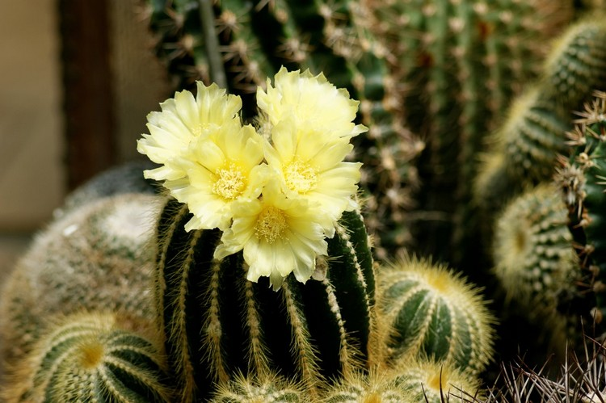
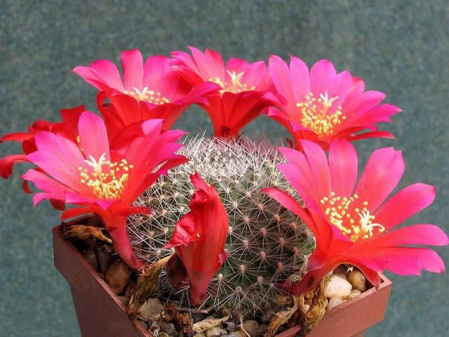
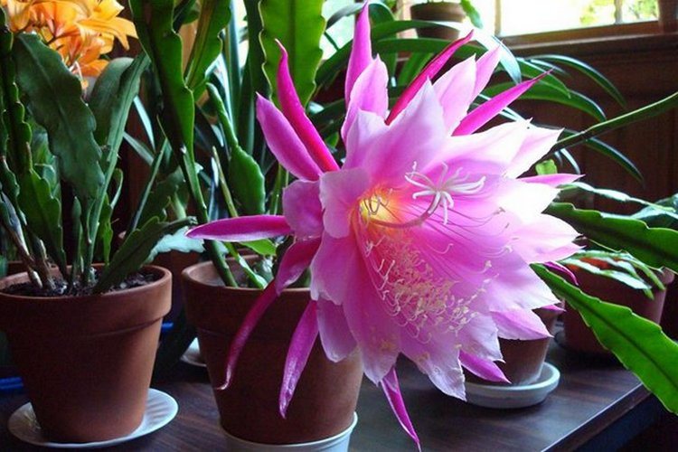
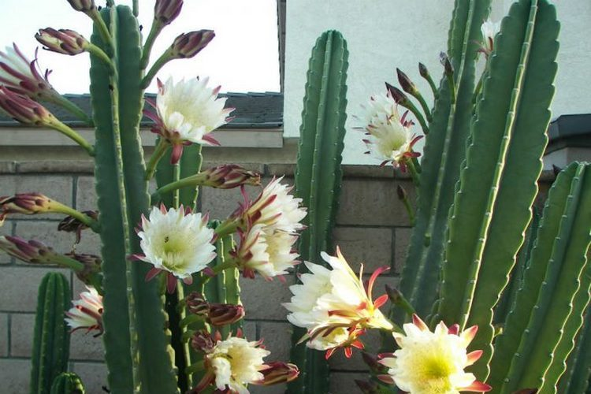
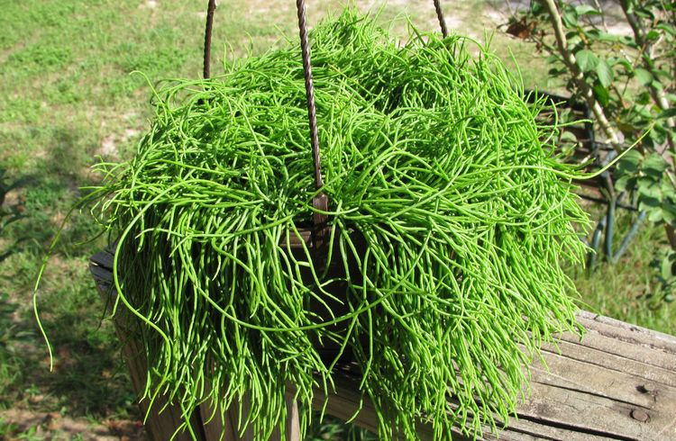
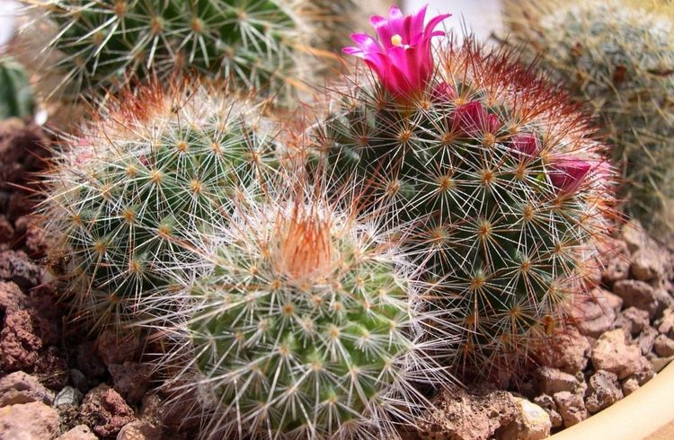
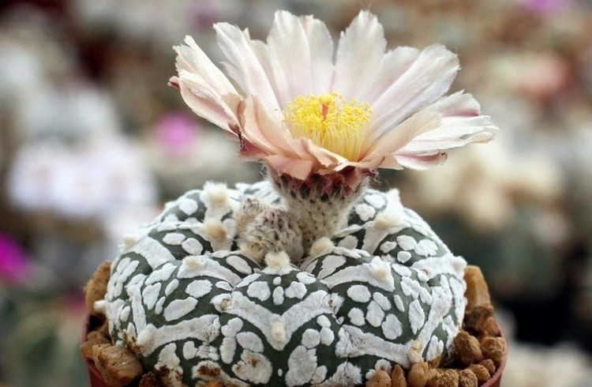
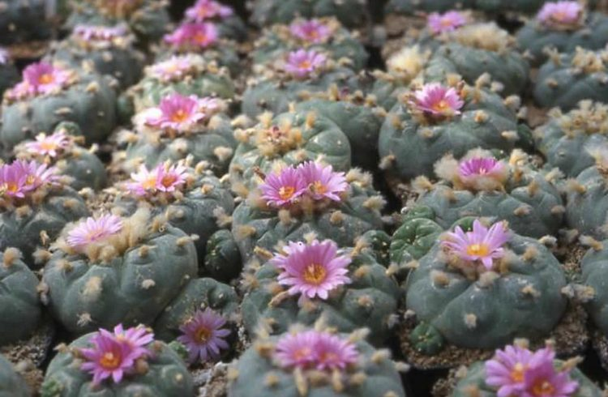
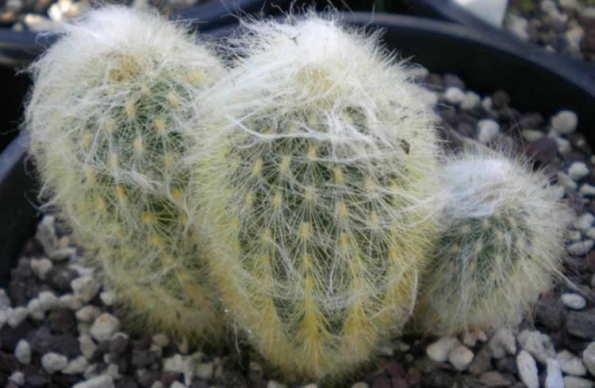

Нотокактус
Тело растения — в виде шара/цилиндра. Существует около 10-ти подвидов данного сорта с отличающимся по форме/толщине стеблем. Нотокактусы растут очень медленно, нуждаются в обильном поливе (не реже 1-го раза в 7 дней). Зимой их лучше содержать в комнате, где температура воздуха постоянно держится на уровне +10°C. Летом оптимальные температурные показатели для суккулента варьируются в диапазоне +24/+27°C. Стебель кактуса подскажет, когда растению нужна вода.
Ребуция
Родина ребуции — Боливия. Внешне кактус напоминает шар, в длину может достигать около 8 см. Вид неприхотлив к месту произрастания, условиям содержания. Однако после пересадки детки молодое растение нужно 2-3 месяца продержать в состоянии покоя, выставив в комнате оптимальный температурный режим (+5°C). Взрослые ребуции хорошо выдерживают температуру до +40 °C. Старайтесь летом выносить их на солнечную, светлую площадку. Хорошо, если она будет продуваться сквозняками, поскольку данному растению постоянно нужен поток свежего воздуха.
Эпифиллум
Вид кактуса эпифиллум пользуется особой любовью у цветоводов. Он принадлежит к категории лесных суккулентов и известен больше 200 лет. В составе вида есть около 20 подвидов.
Цереус
Цереус — вид кактуса, который в природных условиях вырастает до огромных размеров! Длительность его жизни: 200-300 лет. Известны случаи, когда растение выросло до 20 м высотой! Его название переводится как «свеча». Дома цветоводы выращивают карликовые сорта цереуса.
Рипсалис
Рипсалисы — представители семейства кактусовых с необычной внешностью. Тропическое растение выглядит оригинально, имеет множество переплетённых ветвей зелёного цвета. Выращивать его лучше в горшках, установленных на высокие подставки или подвешенных на специальные опоры. Растение полностью оплетает опору примерно за 3 года жизни.
Маммилярии
Распространённый вид кактусов, поверхность которых покрыта множеством ареол. Почки отличаются своей формой и не являются цветоносами. Цветочки появляются из пазух, расположенных между ареолами. Оптимальные условия произрастания для этого растения — много света и тепла.
Астрофитумы
Главная особенность астрофитума — ребристый стебель. Максимальное количество рёбер у растения — 10 штук. В основном встречаются особи с 5-ю лучиками. Стебель кактуса сам по себе очень жёсткий, поэтому иглы растению для дополнительной защиты не нужны.
Лофофора
Кактус лофофора (пейотль, пейот) — растение, запрещённое для культивирования во многих странах на законодательном уровне. Многие цветоводы несмотря на запрет выращивают лофофору и демонстрируют кактусы на фото.
Цефалоцереусы
Цефалоцереус — латинское наименование, означающее «голова старца». Действительно, внешне растение напоминает седовласую голову старика. Его стебель полностью покрыт длинным белым пухом.
